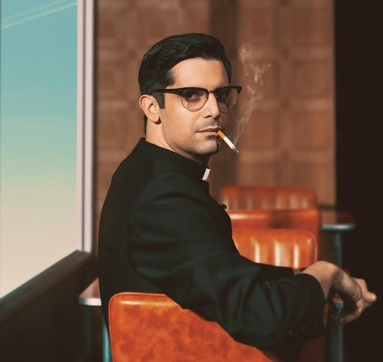

Casting · No Damos Crédito
Una obra de Alfredo Sanzol
CastingEl casting se hará sobre personajes con más de 200 palabras. Del resto se harán combinados de pequeñas partes cómicas en función de la cantidad de personas que seamos.
Texto redistribuidoJorge Arizmendi tendrá aproximadamente un 15 % menos de texto, que se redistribuirá a otros personajes. De la misma manera con Margaret Miller.